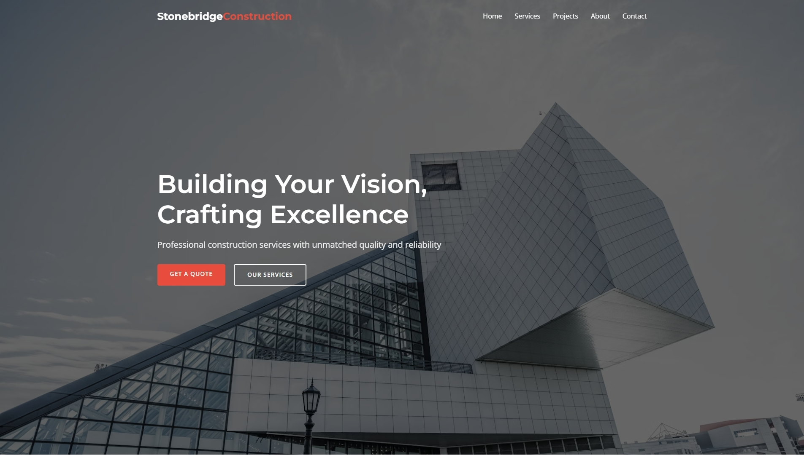

Stonebridge Construction Website
A modern, high-performance website showcasing Stonebridge's premium construction projects and services

Project Overview
We designed and developed a custom WordPress website for Stonebridge Construction to highlight their portfolio of high-end residential and commercial projects. The clean, modern design puts their stunning architectural photography front and center while providing intuitive navigation to their services and contact information.
Key Features
- Responsive design optimized for all devices
- Interactive project gallery with filtering options
- Custom WordPress CMS for easy content management
- Fast-loading pages with optimized images
- Lead generation forms and clear call-to-actions
Technologies Used
WordPress
PHP
JavaScript
Sass
GSAP
Webpack